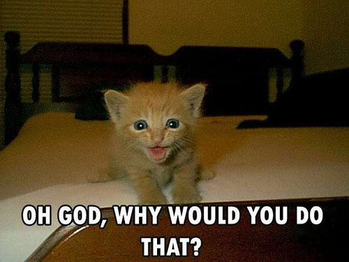

Miriam Makeba - “The Click Song”
Today’s lecture is meant to help you out, not to be memorized!
You won’t be expected to know phonetic terms for the test!
I just want you to know how to figure out how to make a sound
“I’m not even gonna try and pronounce that.”
‘I embrace failure!’
‘I don’t want to learn!’
‘I hereby abandon my linguistic aspirations’
‘Will, I summon thy righteous wrath upon me’
Trying provides practice
After trying, you’ll be more likely to do
Sooner or later, you won’t have a choice
… but you need to know how to start trying!
How does speech work?
How do we describe speech sounds?
How do languages around the world differ in terms of sound?
What’s with the clicking in Africa?
Are there sounds that “English speakers just can’t produce”?
Are there other across-language differences in terms of sound?
Flapping bits of meat inside your head
This creates vibrations in the air
The ear picks these up, and inteprets them as speech.
This is studied in Phonetics
For more info about all this, take LING 2000 and 3100!

We’re going to focus on consonants today.
(For the awesomeness of vowels, take LING 3100 or ask me in office hours!)
We need to know three things:
Place: Where is the sound made?
Manner: What are we doing there?
Voicing: Are we making voicing?


Bilabial: As in “boy”
Labiodental: As in “Vote”
Alveolar: As in “Totes!”
Postalveolar: As in “Judge”
Velar: As in “Tacocat”
Glottal: As in “Uh-oh!”
Stops: Stop the airflow
Fricatives: Constrict the airflow to make sounds
Nasals: Channel the air out the nose
Approximants: Bring the tongue toward the place
Laterals: Channel air around the tongue


Once we’ve organized sounds by place, manner, and voicing, we have…
English Consonants

 |
Retroflex: Curl the tip of your tongue back
Palatal: Make an “eeeeee” sound, then raise your tongue.
Uvular: Bring the back of the tongue to your Uvula
Pharyngeal: Bring the back of your tongue to the back of your throat
Ask Sammy the Interactive Sagittal Section!
Trill: Use the air to flap your tongue rapidly
Tap: Throw your tongue against the roof of your mouth
Lateral Fricative: Blow air quickly around the sides of your tongue!
Languages differ in terms of the number of available vowels
/i, a, u/
(They do have meaningful vowel length, though!)
/i, e, a, o, u/
(as in Spanish, “misa, mesa, masa, mosca, muda”)
/ i, ɪ, e, ɛ, æ, ə, ʌ, ɑ, ɔ, ʊ, u /
beet, bit, bait, bet, bat, sofa, but, bot, bought, book, boot

“Are there any types of sounds that we don’t have?”

For more IPA info, see the resources listing on the course site!

Clicks are used extensively in Khoisan languages
They’ve also been borrowed into Zulu and Xhosa, both Bantu languages (within Niger-congo)
This means that only ~1% of Africans speak a language where there are clicks
All of these languages have lots of non-click sounds!

There is not a meaningful difference between your vocal tract and a !Xoo speaker’s
The only difference between humans is practice!
It’s easier if you start off speaking the language
There are no sounds English speakers “just can’t produce”, with practice.
Make a Voiceless Velar Fricative /x/ (as in “Chanuakkah”, “Challah”, “Bach”)
Make a voiced alveolar trill /r/ (the Spanish Rolled R)
Make a voiceless palatal fricative (ç) (as in an angry cat)
Make a voiceless alveolar lateral fricative (ɬ) (as in “nahuatl”)
Make a /!/ click between two vowels (/a!a/)
Changes in pitch during the word change the meaning of the word
“High” vs. “Low” (sometimes “mid” or “rising/falling”)
| Yesterday - “bi” |
| Wound - “bi” |
| * Which has the high tone? |
| * A - “Yesterday” * B - “Wound” |
Yesterday - “bi”
Wound - “bi”
Which has the high tone?
A - “Yesterday”
B - “Wound”
| Yesterday - “bi” - High |
| Wound - “bi” - Low |
| Dark - “bi” - Short vowel |
| Which has the high tone? |
| B - “Wound” |
Pitch patterns change meaning
‘mother bother horse scold QUESTION’
“Mom is bothered by the horse’s scolding”
Differences in the configuration of the vocal folds resulting in different voicing patterns.
Modal Voicing: What we mostly use in English
Creaky Voicing: Using less air than usual
Breathy Voicing: Using more air than usual
Creaky and breathy voicing are used stylistically in English
When the duration of the vowel can change the meaning of the word
عِد /ʕidd/ - ‘promise’
عِيد /ʕiːd/ - ‘feast’
عُد /ʕudd/ - ‘come back!’
عُود /ʕuːd/ - ‘lute’
عَد /ʕadd/ - ‘counted’
عَاد /ʕaːd/ - ‘came back’
The study of what combinations of sounds are ‘legal’ in a language

‘Merry Christmas’ - merii kurisumasu
‘Merry Christmas’ - merii kurisumasu
When a language borrows a word from another language
Languages often adapt words to fit their rules when borrowing.

‘Strengths’ (/stɹɛŋkθs/)
‘Glance’ - Всгляд (/vzglʲat/)
‘Of Construction’ - строительств (/strʌˈʲitʲɛlʲstf/)
Strč prst skrz krk
‘Stick your finger down your throat’
End a word with a pronounced /h/ (“Bah”)
Say the /ŋ/ in “ring” at the start of a word. (“Ngöndro”)
End a word with the vowel in “bet” or “book”. (“Saké”)
English has “s”, “k”, “v”, but say “Moskva”

Speech is all about place, manner, and voicing of meat-flapping
Languages all use different sets of sounds
Not all African languages are clicky, damnit
Anybody can make any speech sound, with practice
Tone is awesome
Different languages allow different combinations of sounds
Phonetics is awesome!
http://savethevowels.org/talks/lotw_3.html